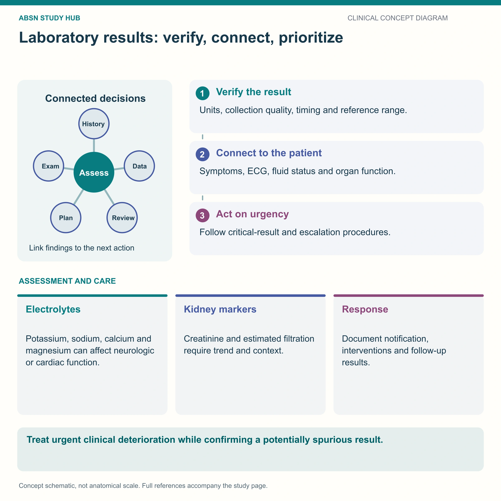

BUN · creatinine · GFR · urinalysis — and the bedside number that beats all four
The kidney filters HUC — Hydrogen ions, Urea and Creatinine — and everything on this page is a way of asking how well is it still doing that? Learn the two blood markers and what makes each of them lie, learn what GFR staging actually predicts, and learn to read a urinalysis line by line. Then remember the number that changes before any of them: the hourly urine output.
📄 Simple Nursing original — opens in Drive →
Two labs for two kidneys — but only one of them is honest.

Figure 1 — every value on this page is produced somewhere in this drawing. Learn where, and the rest of the page explains itself.
The kidneys filter out H · U · C — hydrogen, urea and creatinine.
Figure 2 — BUN and creatinine on their own axes. Notice how many things raise the BUN that have nothing to do with the kidney.
Typical adult 10–20 mg/dL. Urea is a protein waste product — think of a protein bar wrapper the body throws away.
RAISED by things that are not kidney disease: dehydration, a high-protein diet, GI bleeding (blood is protein), steroids, burns, heart failure.
LOWERED by: over-hydration, liver failure (no urea is made), very low protein intake, pregnancy.
Creatinine over 1.3 mg/dL means a damaged kidney. Typical adult 0.6–1.2 mg/dL. Produced at a steady rate, freely filtered and barely reabsorbed — so it tracks filtration almost purely.
Even a small rise matters: doubling the creatinine roughly halves the filtration rate.
Never give a nephrotoxic drug without checking the most recent creatinine and urine output.
One number that predicts what will go wrong next.
Figure 3 — the staircase. Notice that G4 is where the fistula gets built: access is planned long before dialysis is needed.
Glomerular filtration rate: how many milliliters the kidneys filter per minute. Normal is over 90 mL/min/1.73 m².
It is estimated from the creatinine together with age, sex and body size — so anything that changes muscle mass changes the estimate. A frail older adult can have significant kidney disease with an unremarkable creatinine.
GFR and creatinine move in opposite directions: as filtration falls, creatinine rises.
| Stage | GFR | What it means for you |
|---|---|---|
| G1 | 90+ | Damage present, filtration normal — control blood pressure and glucose |
| G2 | 60–89 | Mild loss — usually silent, found on routine labs |
| G3 | 30–59 | Moderate — anemia, high phosphate, low calcium and bone changes begin; drug doses need adjusting |
| G4 | 15–29 | Prepare for renal replacement — this is when an AV fistula is created, because it needs months to mature |
| G5 | under 15 | Kidney failure — dialysis or transplant |
Figure 7 — the kidney is a filter, a gland and a buffer. When it fails, all four of these jobs fail with it, and each one shows up as a different laboratory value.
Never give a potassium-containing IV or a potassium-sparing diuretic in renal failure without a deliberate order and a current level.
Three layers to a UA, and the collection technique that decides whether any of it is true.
Figure 5 — color and specific gravity are the same information told two ways. Both answer: is this urine concentrated?
Figure 4 — the dipstick pad by pad. The two that matter most sit next to each other: leukocyte esterase and nitrites.
| Pad | Normal | A positive means |
|---|---|---|
| pH | 4.5–8.0 | Acid urine in renal failure; alkaline urine with some UTI organisms |
| Specific gravity | 1.005–1.030 | High = dehydrated · low = dilute |
| Protein | negative | Glomerular damage; heavy loss = nephrotic syndrome |
| Glucose | negative | Blood glucose past the renal threshold — and sugar in urine feeds bacteria |
| Ketones | negative | Fat being burned — DKA, starvation, very low-carb diets |
| Blood | negative | Hematuria — stones, infection, tumor, trauma, post-TURP |
| Leukocyte esterase | negative | White cells in the urine = infection |
| Nitrites | negative | Bacteria converting nitrate to nitrite |
Figure 6 — the sediment. Casts are the finding that pins the problem to the kidney rather than the bladder.
The values only matter when you put them beside the client and the chart.
Figure 8 — the urometer. This number moves before the creatinine does, which makes it the earliest sign you have.
Never report anuria before you have checked the catheter — kinked, clamped, blocked, or the client lying on the tubing.
BUN 19 · glucose 155 · creatinine 1.9 · WBC 14,500
The answer to “which value do you act on?” is the creatinine.
These newly drawn concept diagrams consolidate the retired illustration sets. The accompanying study notes and original handout links remain on this page.